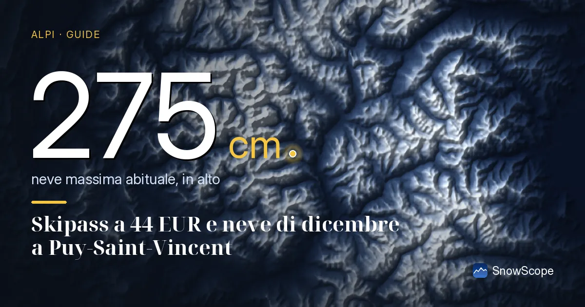

Skipass a 44 EUR e neve di dicembre a Puy-Saint-Vincent
Con uno skipass giornaliero adulto a 44 EUR, Puy-Saint-Vincent è un'opzione economica per sciare a dicembre negli Écrins. Sebbene la base a 1.411 m sia spesso poco innevata a inizio inverno, la nostra cronologia della neve mostra una copertura affidabile dalla metà del comprensorio in su. Ecco il confronto con Serre Chevalier.
Le previsioni neve in tempo reale per Puy-Saint-Vincent nell'app SnowScopeAltezza neve, allerte powder e mappa 3D, gratis.
Uno skipass a 44 EUR su una montagna compatta
Per l'inverno 2026-27, il sito ufficiale di Puy-Saint-Vincent propone lo skipass giornaliero adulto a 44 EUR. Questo copre un'area sciabile di 42 km di piste e 12 impianti, che vanno da 1.411 m a 2.664 m per un dislivello di 1.253 m.
La compattezza del comprensorio rende i brevi viaggi di dicembre semplici ed economici. La vera domanda è quanto la neve naturale resista a ogni quota prima di gennaio.

Tre quote, tre storie di neve a dicembre
Alla base degli impianti (1.411 m), la neve a dicembre è spesso scarsa. Nella nostra cronologia di 46 inverni (1980-81 al 2025-26), lo spessore abituale a dicembre è di 19 cm, scendendo sotto i 5 cm in 1 inverno su 10 e superando i 39 cm in 1 inverno su 10.
Più in alto, la copertura cresce rapidamente. A metà montagna (2.037 m) si contano in media 55 cm in un tipico dicembre, con 1 inverno su 10 sotto i 21 cm e 1 inverno su 10 sopra i 96 cm. In cima (2.664 m), un dicembre tipico raggiunge i 106 cm (44 cm in annate scarse, 185 cm in annate abbondanti).
Quali settimane di dicembre hanno più neve
I numeri settimana per settimana indicano quando prenotare. Alla base (1.411 m), 30 cm o più si verificano nel 15% degli inverni passati tra l'1 e il 7 dicembre, 20% dall'8 al 14, 28% dal 15 al 21 e 33% dal 22 al 28 dicembre, mentre 50 cm o più appaiono solo nello 0%, 2%, 7% e 9% dei casi.
A metà montagna (2.037 m), 30 cm o più si mantengono nel 61% degli inverni passati tra l'1 e il 7 dicembre, salendo al 76%, 89% e 93% nelle tre settimane successive, mentre 50 cm o più passano dal 35% e 46% al 54% dal 15 al 21 dicembre e al 70% dal 22 al 28 dicembre. In cima (2.664 m), 30 cm o più raggiungono il 98% dall'1 al 7 dicembre e il 100% in seguito, con 50 cm o più al 74%, 85%, 93% e 96%.
Confronto con il vicino Serre Chevalier
Serre Chevalier è molto più grande, con 157 km di piste e 70 impianti dai 1.219 m ai 2.765 m (dislivello di 1.546 m). Il sito ufficiale elenca uno skipass adulto di 6 giorni a 276,00 EUR dall'apertura al 18 dicembre 2026 e 345,00 EUR dal 19 dicembre 2026 al 1° gennaio 2027. Puy-Saint-Vincent offre solo lo skipass giornaliero a 44 EUR, adatto a viaggi brevi.
Nella nostra cronologia, Serre Chevalier ha più neve alla base (1.219 m), con una media di 30 cm a dicembre (8 cm scarsi, 59 cm abbondanti) con 30 cm o più nel 30%, 41%, 52% e 67% degli inverni. Più in alto, sono vicini: Serre Chevalier ha in media 58 cm a metà montagna (1.992 m; 24 cm scarsi, 103 cm abbondanti) e 111 cm in cima (2.765 m; 50 cm scarsi, 192 cm abbondanti), raggiungendo 30 cm o più nel 65%, 83%, 93% e 96% degli inverni a metà montagna e 50 cm o più nel 78%, 87%, 96% e 96% in cima.
Prima neve, tendenze e primi segnali
L'inverno scorso (2025-26) ha avuto una media di dicembre modesta a Puy-Saint-Vincent: 12 cm alla base, 42 cm a metà montagna e 91 cm in cima. La prima neve duratura arriva solitamente il 30 ottobre alla base, il 26 ottobre a metà montagna e il 13 ottobre in cima. Confrontando i primi 15 inverni (1980-81 al 1994-95) con gli ultimi 15 (2011-12 al 2025-26), le medie di dicembre sono salite da 13 cm a 23 cm alla base, da 42 cm a 60 cm a metà montagna e da 87 cm a 114 cm in cima. Gli estremi minimi hanno toccato 0 cm alla base nel 1998-99 (13 cm a metà, 38 cm in cima nel 2015-16), mentre il 1996-97 ha raggiunto 52 cm, 114 cm e 199 cm.
Come segno dell'inizio di questa stagione, la stima odierna del 13 novembre 2026 è di 0 cm alla base e a metà montagna, e 11 cm in cima, con una previsione di 0 cm, 37 cm e 70 cm di neve fresca nei prossimi sette giorni. Per il periodo dal 13 al 26 novembre 2026, le prospettive a due settimane a metà montagna e oltre danno un range di previsione da 69 cm a 108 cm (89 cm in media).
Consigli per sciatori
- Punta al 15-21 dicembre o al 22-28 dicembre, quando la probabilità di avere 50 cm o più a metà montagna (2.037 m) sale al 54% e 70% degli inverni passati.
- Scia principalmente tra metà montagna (2.037 m) e la cima (2.664 m), dato che la base a 1.411 m ha una media di 19 cm.
- Controlla il bollettino valanghe prima di andare fuori pista, specialmente in quota dove la neve di dicembre raggiunge i 106 cm.
- Prenota lo skipass giornaliero a 44 EUR sul sito ufficiale di Puy-Saint-Vincent, o confronta lo skipass di 6 giorni di Serre Chevalier a 276,00 EUR.
Altre mappe (siti esterni)
Riferimenti e crediti
- Puy-Saint-Vincent, official ski pass prices 2026-27 www.puysaintvincent.com/forfait-ski-puy-saint-vincent
- Serre Chevalier, official booking site, ski passes 2026-27 reservation.serre-chevalier.com/achetez-vos-ski-pass-serre-chevalier-et-autres-prestations.html
- SnowScope, December snow at three heights and today's snow map snowscope.app/
Su questi numeri
Numeri della neve: storico neve SnowScope, 46 inverni passati (1980-81 - 2025-26) a tre quote di ogni località (un modello del passato corretto per la quota: una stima per un'area, non misure della località); dati di dicembre calcolati dalle altezze giornaliere di quegli inverni. Neve attuale e tendenza a due settimane: previsioni SnowScope (tendenza da ECMWF e GFS, un intervallo, non una promessa). Impianti e piste: mappatura OpenSkiMap. Prezzi: le pagine ufficiali qui sotto, lette il 2026-11-13; i prezzi possono cambiare, verificare prima di prenotare.
Bollettini valanghe ufficiali: Météo-France – Bulletin d'estimation du risque d'avalanche
Cita questo articolo
Per ricerca, didattica o stampa: numeri e grafici sono liberamente riutilizzabili con licenza CC BY 4.0 citando così.
SnowScope (2026), Skipass a 44 EUR e neve di dicembre a Puy-Saint-Vincent, https://snowscope.app/blog/it/2026/11/puy-saint-vincent-december-ski-cheap-pass-snow-2026.html, consultato il 2026-11-14
SnowScope (Atlas Labs). (2026, November 14). Skipass a 44 EUR e neve di dicembre a Puy-Saint-Vincent. SnowScope snow reports. https://snowscope.app/blog/it/2026/11/puy-saint-vincent-december-ski-cheap-pass-snow-2026.html
BibTeX
@misc{snowscope2026puysaintvincentdecembers,
author = {{SnowScope (Atlas Labs)}},
title = {Skipass a 44 EUR e neve di dicembre a Puy-Saint-Vincent},
year = {2026},
month = nov,
howpublished = {\url{https://snowscope.app/blog/it/2026/11/puy-saint-vincent-december-ski-cheap-pass-snow-2026.html}},
note = {Published 2026-11-14 14:11 UTC; accessed 2026-11-14}
}· CC BY 4.0 · Metodi, dati e strumenti →
Puy-Saint-Vincent: neve e temperatura per quota, quest'inverno vs lo scorso (strumenti) →
Segui Puy-Saint-Vincent
Gratis: un messaggio quando arriva la neve e il meteo ogni mattina.